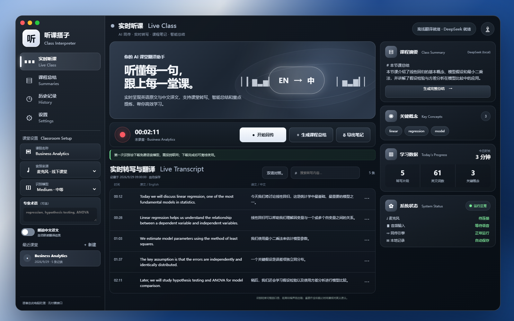

Live Class
实时英译中，Whisper + Argos 在本机
Local classroom interpreter · 0.3.3
Free English→Chinese live captions on your laptop.
No paid API for speech. 安装包就是下面这两个 zip。
等 Chrome 下完，不要打开 .crdownload · Mac 用 Open.command · Windows 右键 Extract All 再 OPEN-THIS.bat · 校园网请换手机热点

实时英译中，Whisper + Argos 在本机
课后总结；官方 zip 不用再填 key
不上传录音 · http://127.0.0.1:8765/
安装包：ClassInterpreter-windows.zip（当前 0.3.3）
解压后路径：ClassInterpreter-0.3.3\Start.bat · 环境 .venv\ · 模型 hf\ · 笔记 data\
安装包：ClassInterpreter-mac.zip（当前 0.3.3）
运行文件：~/Library/Application Support/ClassInterpret · 日志 ~/Library/Logs/class-interpret.log
手机不能单独装同传。必须先有一台已打开的电脑。
手机打不开电脑上的 http://127.0.0.1:8765/，必须用 https 链接。